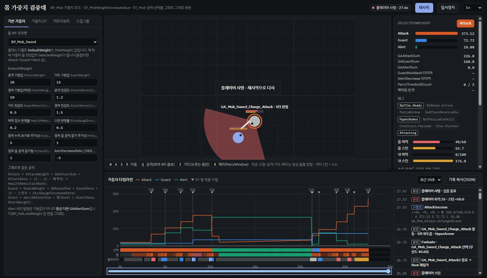
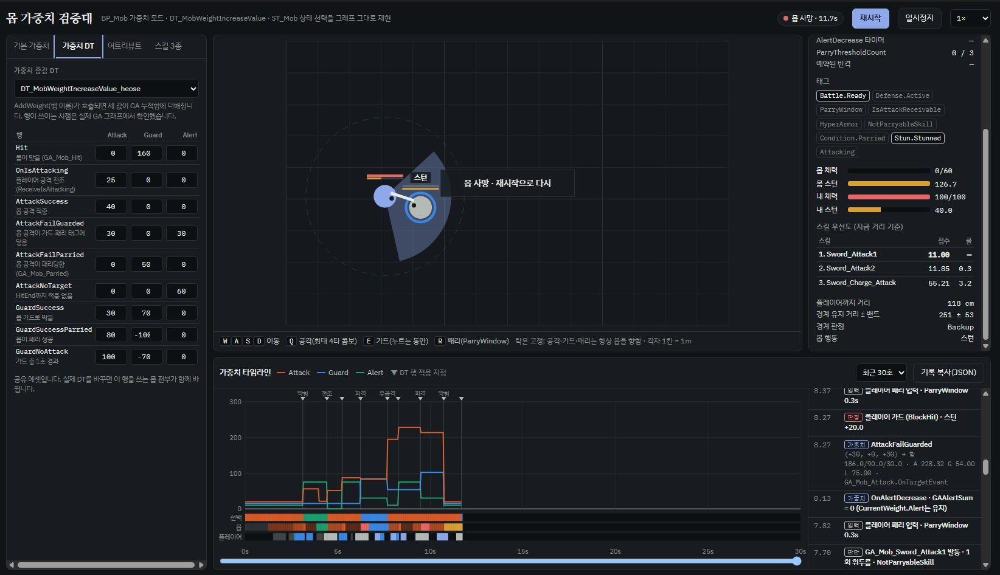
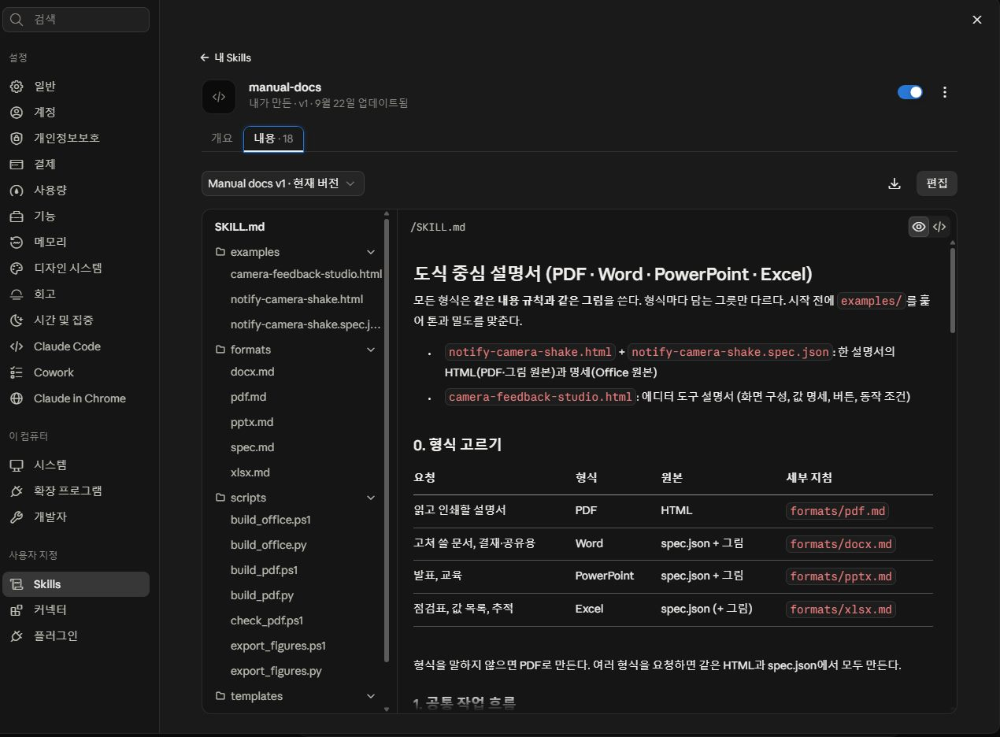
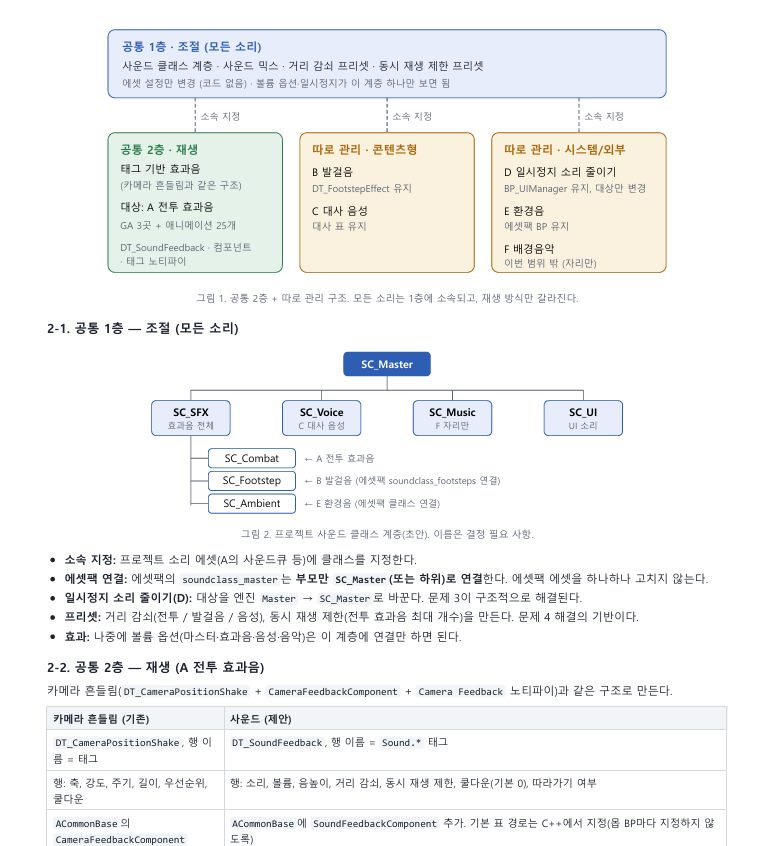
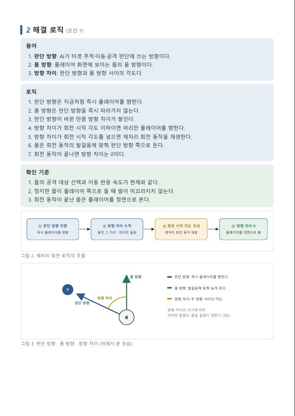
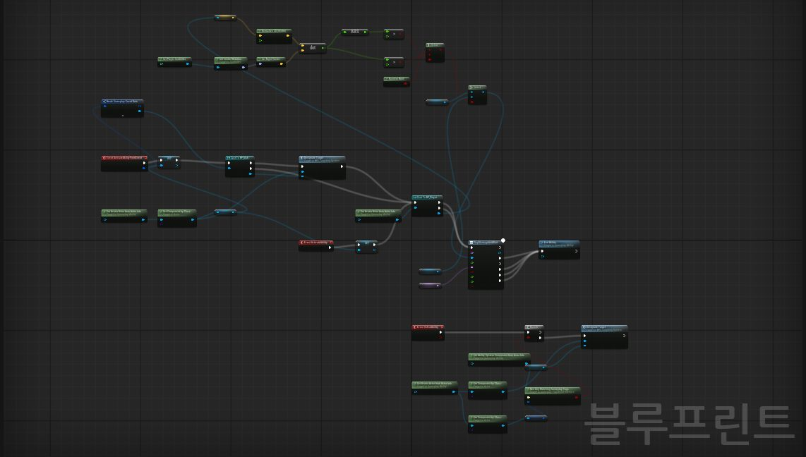
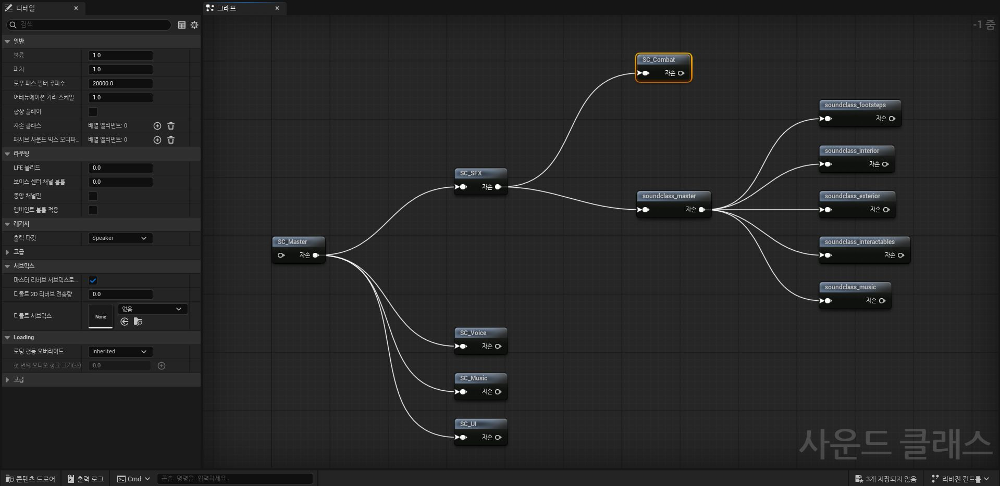
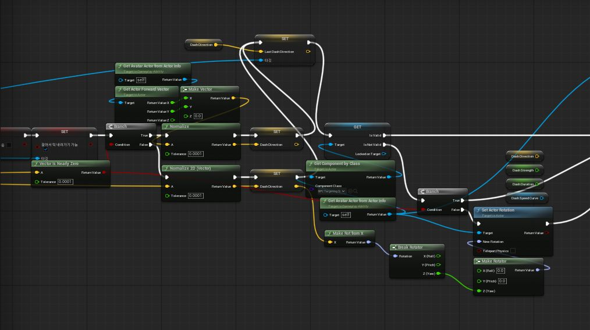

AI & Workflow / Detail
01 / Design Validation


02 / Documentation
자료 먼저 수집
한 문장 한 조건
도식 중심으로 작성
규격 통일, 명세서 · 사용법 문서 작성 시간 단축



03 / Build
데이터 구조와 수정 범위를 직접 검수했습니다.
의도대로 동작하는지 검증하며 데이터 구조와 시스템 설계 이해도를 높였습니다.



What I Can Do
AI를 기획 업무에 직접 붙여 본 범위입니다.
Claude · 가중치 그래프
근거 조사 → 규칙 → 도식화 → 검수
Claude Code · 언리얼